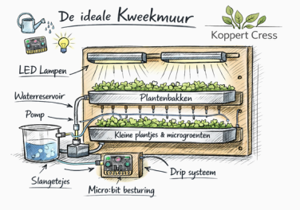
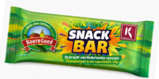

Welkom bij het portaal voor Technologie & Toepassing op ISW Hoogeland.
In dit project maak je een kweeksysteem dat aan de muur hangt. Je bouwt een prototype waarbij biologie, techniek en ontwerp samenkomen.

Bekijk Opdracht & Eisen →Ontdek hoe gezonde repen worden gemaakt in samenwerking met Koppert Cress en BoereGoed. Van cressen proeven tot eindproduct.

Bekijk Opdracht & Eisen →